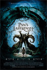

01.03.08
Favorite Movies of 2007
(See also podcasts, TV shows and books)
In case it hasn’t been clear from the previous posts, these are movies that I enjoyed in 2007, rather than movies that came out in 2007. I couldn’t hold myself to five movies this year, so I went with seven. Several of these came from “best of 2006″ lists like the Oscars. A few others came from the BAFTAs.
My Summer of Love
(Pawel Pawlikowski – 2004)
With only three real characters, this is a very simple, tightly-constructed movie. There’s nothing excessive about it. It’s carried by its strong themes: class, adventure, deception. The fact that the story revolves around a lesbian relationship is never mentioned — its light treatment here makes films like Brokeback Mountain seem very heavy-handed in comparison. I liked Pawel’s explanation of the film:
If you wanted to make a film about British teenagers it would be… well, it wouldn’t interest me, let’s put it like that. They’d be listening to music I hate, watching TV all the time, and talking about Big Brother. I needed to remove it, to get to the essence of adolescence without the paraphernalia of today. In a way I am arrested in my adolescent emotions, like most of us I think are, so [the film is] very personal, funnily enough, despite it being about two girls.
Touching the Void
(Kevin Macdonald – 2003)
Another BAFTA winner, this is a documentary about Joe Simpson and Simon Yates’ mountaineering expedition in the Andes. They’re both extremely down to earth, which makes it possible to relate to the extraordinary experience they went through. Simpson has dealt more directly with the prospect of his own death than just about anyone else, and his night in the crevasse is at the heart of this movie. His reaction isn’t heroic, but it’s very genuine.
The Lives of Others (Das Leben der Anderen)
(Florian Henckel von Donnersmarck – 2006)
I saw two excellent German movies this year, both featuring Ulrich Mühe (the other being Zwartboek, technically a Dutch movie). Ironically, Mühe died a few weeks after I saw this movie. It follows a writer in Eastern Germany and a Stasi agent (Mühe) assigned to observe him. I don’t want to say too much, but the ending is absolutely perfect. It couldn’t have been done any better.
Pan’s Labyrinth
(Guillermo del Toro – 2006)
The combination of Spanish Civil War and a child’s fantastical imagination is strange, but it works surprisingly well. Innocence and Experience would be the themes here. An interesting side note: by 1944 the Spanish Civil War was almost entirely over. These really were the last holdouts.
The Fog of War
(Errol Morris – 2004)
An extended conversation with Robert McNamara, one of the more interesting and controversial Secretaries of Defense in the 20th century. I can only imagine how interesting it must be for someone who lived through the Vietnam War to hear what was going on behind the scenes like this. I can see why he was so hated during that war. He was a statistician during World War II managing bomber runs, and this kind of analytical approach to people informed everything else he did in his life. He views everything in a very detached way, always looking at the numbers. An interesting look at an interesting life.
The Freshest Kids: A History of the B-Boy
(Israel – 2002)
A documentary about break-dancing, or “breaking” as the dancers prefer to call it. I learned a lot about the history of hip-hop from this movie, but if you don’t care about that, there are worse things you could do than watch a few hours of break-dancing. Highly recommended if you’re curious what the difference between “rap” and “hip-hop” is.
The Room
(Tommy Wiseau – 2003)
Tommy’s a genius, what more can I say? Oh right, “You’re tearing me apart, Lisa!”
Trailer
Fratrik said,
January 8, 2008 at 5:03 pm
Any guesses why I can’t find The Room on Netflix?
Steve said,
October 6, 2008 at 11:03 pm
See The Room at the Lamml’s Sunset 5, Los Angeles, “You’re tearing my apart, Lisa!” “what about your sex Mark”………………………………